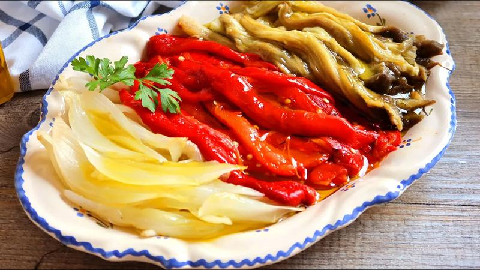
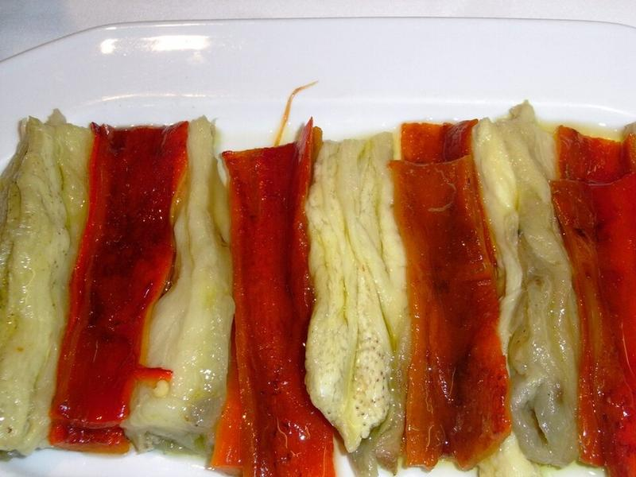
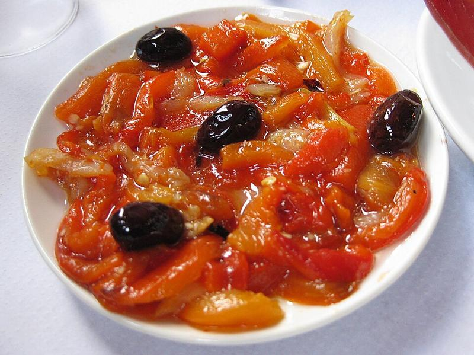

Escalivada

L’escalivada és un dels plats més representatius de la cuina mediterrània, elaborat amb verdures rostides que destaquen pel seu sabor intens i natural.
Per preparar una bona escalivada, es rosteixen al forn o a la brasa albergínies, pebrots i cebes fins que queden tendres, i després es pelen i s’amaneixen amb oli d’oliva i sal.
És un plat increïblement versàtil, que es pot servir com a entrant, acompanyament o fins i tot com a base per a altres preparacions.

